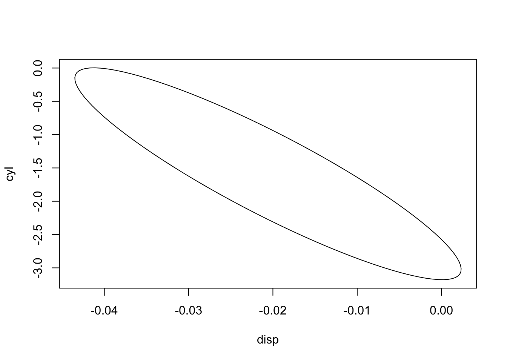

The reader is probably already familiar with the concept of a confidence interval (CI). But that is just in one dimension. Confidence intervals are even more useful in the multidimensional setting. In this chapter, we introduce a fairly general method of forming a CI from multivariate data, and then extend the notion to confidence sets for unknown multivariate quantities themselves. As the reader may have guessed, the word “multivariate” here is a sign that linear algebra is involved, which will indeed be the case.
6.1 Review: Confidence Intervals, Standard Errors
To set the stage, let’s review the statistical concepts of confidence interval and standard error. Say we have an estimator \(\widehat{\theta}\) of some population parameter \(\theta\), e.g. \(\bar{X}\) for a population mean \(\mu\).
Loosely speaking, the term standard error of is our estimate of \(\sqrt{Var(\widehat{\theta})}\). More precisely, suppose that \(\widehat{\theta}\) is asymptotically normal. The standard error is an estimate of the standard deviation of that normal distribution. For this reason, It is customary to write \(AVar(\widehat{\theta})\) rather than \(Var(\widehat{\theta})\).
This can be used to form a confidence interval (see below), but also stands on its own as an indication of the accuracy of \(\widehat{\theta}\).
A, say 95%, confidence interval (CI) for \(\mu\) is then
The 95% figure means that of all possible samples of the given size from the population, 95% of the resulting confidence intervals will contain \(\theta\). In many cases, the 95% figure is only approximate, stemming from a derivation that uses the Central Limit Theorem.
In general, for confidence level \(1-\alpha\) replace 1.96 by the upper \(z_{\alpha}\), the \(1-\alpha/2\) quantile of the N(0,1) distribution, and denote the standard error of \(\widehat{\theta}\) by \(\textrm{SE}(\widehat{\theta})\). Then our CI is
There is a bit of drama in this word “contain.” Instead of saying the intervals contain\(\theta\), why not simply say \(\theta\) is in the intervals? Aren’t these two descriptions equivalent in terms of English? Of course they are. But many instructors of statistics classes worry that students will take the second description to mean that \(\theta\) is the random quantity, when in fact the CI is random (random center, random radius) and \(\theta\) is fixed (though unknown). The instructors thus insist on the more awkward phrasing, so as to avoid students misunderstanding. Indeed some instructors would contend that use of the word in is itself just plain incorrect. My own view is that in some cases the word in is clearer (and certainly correct in any case), and that it is better to add a warning about what is random/nonrandom than engage in awkward phrasing.
6.2 The R vcov Function
So, how does one obtain standard errors? In R, in many cases, they will be provided by the summary function, but we may need an entire estimated covariance matrix rather than just a standard error.
Due to the Multivariate Central Limit Theorem, many common statistical estimators have approximately normal distributions. In R, functions such as lm, glm, lme and coxph come with an associated function vcov. This gives the approximate covariance matrix of the computed estimator, e.g. for the estimated coefficients vector in a linear model. This enables formation of approximate confidence intervals for not only individual model parameters but also linear combinations of them, as well as computing other quantities related to confidence sets.
The vcov function is an R generic function, playing a similar role to print, plot, summary and so on. Many R statistical functions have this for their output, including lm. When we make the call vcov(glmOut), the R interpreter sees that glmOut is of class “glm” and thus transfers the call to the class-specific function, vcov.glm(glmOut). The function coef, also used here, is also generic.
6.2.1 Example: Iranian churn data
Here we predict whether a telecom customer will move to another provider. We obtain \(AVar(\widehat{\beta})\) using the vcov function:
data(IranianChurn)glmOut <-glm(Exited ~ ., data = iranChurn, family = binomial)acov <-vcov(glmOut)acov
There are several categorical variables here, so after expansion to dummies, \(AVar(\widehat{\beta})\) is \(12 \times 12\). This is the covariance matrix for the vector of estimated logistic regression coefficients \(\widehat{\beta}\).
Say we wish to compare Germany and Spain. The difference will be of the form \(a'\beta\). What should we take for \(a\)?
Ah, we set \(a\) to (0,0,1,-1,0,0,0,0,0,0,0,0)’. Using Equation 4.6, we compute the standard error and the CI:
a <-c(0,0,1,-1,0,0,0,0,0,0,0,0)avar <-t(a) %*% acov %*% ase <-sqrt(avar)estdiff <-t(a) %*%coef(glmOut)c(estdiff-1.96*se,estdiff+1.96*se)
[1] 0.5850204 0.8939729
6.3 The Delta Method
This is one of the most useful simple tools in statistics.
6.3.1 Motivating example
Now, for the delta method, as a first example, say we are estimating a population mean \(\mu\) and are also interested in estimating \(\log(\mu)\).
We will probably use the sample mean \(\bar{X}\) to estimate \(\mu\), and thus use \(W = \log{\bar{X}}\) to estimate \(\log(\mu)\). But how do we obtain a standard error for \(W\)?
If we just need to form a confidence interval for \(\log(\mu)\), we can form a CI for \(\mu\) and then take the log of both endpoints. But again, standard errors are of interest in their own right.
6.3.2 Use of the Central Limit Theorem
The Central Limit Theorem tells us that \(\bar{X}\) is asymptotically normally distributed. But what about \(\log{\bar{X}}\)?
From calculus, we know that a smooth function \(f\) can be written as a Taylor series,
The key point is that as n grows, \(\bar{X}-\mu\) goes to 0, and \((\bar{X}-\mu)^2\) goes to 0 even faster. Using theorems from probability theory, one can show that, in the sense of distribution,
\[
W \approx log(\mu) + log'(\mu) (\bar{X}-\mu)
\]
The right-hand side is a linear function of \(\overline{X}\). The latter is asymptotically normal by the Central Limit Theorem, and thus the linear function \(W\) is also asymptotically normal.
In other words, \(W\) has an approximate normal distribution that has mean \(log(\mu)\) and variance
\[
\frac{1}{\mu^2} \sigma^2/n
\]
where \(\sigma^2\) is the population variance \(Var(X)\) . We estimate the latter by the usual \(S^2\) quantity, and thus have our standard error,
where \(f_1\) and \(f_2\) are partial derivatives,
A partial derivative of a function of more than one variable is the derivative with respect to one of those variables. E.g. \(\partial/\partial v ~ vw^2 =
w^2\) and \(\partial/\partial w ~ vw^2 =
2vw\).
As usual, use of matrix notation can help clean up messy expressions like this. The gradient of \(f\), say in the two-argument case as above, is the vector
where ‘ACov’ means the asymptotic covariance matrix of the vector
\[
W =
\left (
\begin{array}{r}
Q \\
R \\
\end{array}
\right )
\tag{6.4}\]
Let’s call that asymptotic covariance matrix \(\widehat{\Sigma}\).
6.3.4 Example: ratio of two means
Often \(\widehat{\Sigma}\) will be provided by our application software, such as with R’s vcov function, but we will need to derive it in this case, using properties of sample means.
Say our sample data consists of mother-daughter pairs,
\[
\left (
\begin{array}{r}
M \\
D \\
\end{array}
\right )
\]
representing the heights of mother and daughter. Denote the population mean vector by
We might be interested in the ratio \(\omega = \mu_D / \mu_M\). Our estimator will be \(\widehat{\omega} = \bar{D} / \bar{M}\), the ratio of the sample means.
Thus we will need \(AVar(\bar{D})\), \(AVar(\bar{M})\) and \(ACov(\bar{D},\bar{M})\). These quantities are exact, not asymptotic, so we can simplify our notation, e.g. changing \(AVar(\bar{M})\) to \(Var(\bar{M})\).
Be sure to distinguish between similar quantities. For example:
\(Var(M)\) measures how \(M\) varies across all individuals in the population,
Though finding expressions for the derivatives in the above example was not onerous, the function \(f\) can be rather complex, with the expressions for its derivatives even more complicated. Typically such tedious and error-prone operations can be avoided, by having the software calculate approximate derivatives.
So an aproximate value of \(f'(x)\) is obtained by choosing some small value of \(w\) and evaluating
\[
\frac{f(x+w) - f(x)}{w}
\]
Though of course there is an issue with one’s choice of \(w\), the point is that one can code the software to find approximate derivatives automatically using this device. This is very common in Data Science libraries.
For example, the R package numDeriv will compute numerical derivatives.
6.6 Scheffe’s Method
In analyzing the Iranian Churn data above, we might form many CIs, each at the 0.95 level. However, we may wish to set an overall level to at least 0.95, meaning that the probability that at least one of the CIs fails to contain the desired population value is at most 0.05. This concept is known as multiple inference or simultaneous inference.
Whether to do this is a philosphical question, and the answer will depend on one’s goals and personal preferences, or possibly due to requirements of a research journal or employer. If we do wish to pursue the matter, then how? One of the most well-known approaches makes good use of linear algebra.
6.6.1 A confidence set for \(\widehat{\beta}\) in the linear model
It can be shown that if a random vector \(W\) has a \(k\)-dimensional normal distribution random vector with mean vector \(\mu\) and covariance matrix \(\Sigma\), then
The chi-square distribution with \(k\) degrees of freedom is defined to be the distribution of the sum of the squares of \(k\) independent N(0,1) random variables. After applying properties such as Equation 4.5, one can show that the quadratic form here also has that distribution.
\[
Q = (W-\mu)' \Sigma^{-1} (W-\mu)
\]
has a chi-square distribution with \(k\)degrees of freedom. Say \(d_{\alpha}\) is the upper-\(\alpha\) quantile of that distribution, i.e.
In the case \(k=2\), the set of all \(t = (t_1,...,t_k)'\) such that
\[
(t-\mu)' \Sigma^{-1} (t-\mu) = d_{\alpha}
\]
is an ellipse. (If \(\Sigma = I\), we have a circle.) For \(k=3\) we have an ellipsoid, a “football,” and so on in higher dimensions..
Now, in the context of the linear model, take \(W\) to be \(\widehat{\beta}\), \(\mu = \beta\) etc. Here \(\Sigma\) must be estimated by \(\widehat{\Sigma}\) (given to us via vcov), so we should replace the chi-square distribution by the F-distribution. But for simplicity, let’s stick with chi-square, which is a good approximation for large \(n\) anyway.
We will use the linear model here for concretenss, but the same analysis holds for any asymptotically normal statistical estimator, e.g. Maximum Likelihood estimates.
Therefore, the set of all \(\beta\) satisfying Equation 6.6 is a \(100(1-\alpha)\) confidence set for the true population \(\beta\).
This gives us a confidence ellipse for \(\beta\) in two dimensions, a confidence ellipsoid in three dimensions and so on.
The ellipse library can draw this for us:
library(ellipse)data(mtcars)fit <-lm(mpg ~ disp + cyl , mtcars)plot(ellipse(fit, which =c('disp', 'cyl'), level =0.90), type ='l')

Here the axes are \(\beta_{disp}\) and \(\beta_{cyl}\).
By the way, note that the smaller \(\alpha\) is, the larger will be the value of \(d_{\alpha}\), thus the larger the ellipse. The reader should pause to confirm that this makes sense.
However, this is but an itermediate step toward our goal of a multiple inference method. Our next step will be to set up a math tool.
6.6.2 Lagrange multipliers
In Chapter 5, we saw the power of matrix derivatives, in our case to minimize a sum of squares. Here we go one step further, again doing optimization, but in this case under a constraint. To this end, we first need to introduce the concept of Lagrange multipliers.
The context is that we wish to minimize/maximize a quantity \(f(w)\), subject to \(g(w) = 0\), where \(w\) is a vector argument. We set up the expression \(f(w) + \lambda g(w)\), and find its extreme values.
For instance, say we wish to minimize
\[
f(x,y) = x^2 + 2y^2
\]
subject to the constraint.
\[
3x + y = 8
\tag{6.7}\]
We form the expression
\[
x^2 + 2y^2 + \lambda (3x + y - 8)
\]
xxx
and take partial derivatives with respect to \(x\), \(y\) and \(\lambda\):
The Lagrange multiplier here is \(\lambda\). If we have several constraints, we have several multipliers.
6.6.3 Simultaneous confidence intervals for quantities \(a'\beta\)
In Section 6.2, we saw how to form confidence intervals for a quantity \(a'\beta\). We may wish to form several, or even many, such intervals. Here is how the Scheffe’ method can make the intervals simultaneous.
To find a CI for \(a'\beta\), we find its maximum and minimum values subject to \(\beta\) being in the ellipsoid. In other words, we solve the Lagrange multiplier problem
There is an easily-missed subtlety here. Our phrasing “subject to \(\beta\) being in the ellipsoid” (i.e. either in the interior or on the boundary) is at odds with the Langrange formulation, which stipulates that the min or max values occur on the boundary. But the latter property is implied by the linearity of \(a'\beta\): Consider any point \(q\) that is strictly interior to the ellipsoid, so our objective function has value \(a'q\). Then there is room for us to move away from \(q\) yet still be inside the ellipsoid, say to the point \(u\), yet with \(a'u\) either larger or smaller that \(a'q\), depending on the direction we move in. So the min or max cannot be in the interior.
Let \(C\) be a symmetric matrix. The derivative of a quadratic form \(u'Cu\) with respect to \(u\) can be shown to be \(2Cu\). Differentiating with respect to \(\beta\), we thus have
Now, why does this interval hold simultaneously over all\(a\)? The point is that once we know \(\beta\) is in the ellipsoid, then the above algebraic computations show that for any\(a\), the quantity \(a'\beta\) will be between \(a'\widehat{\beta} - \sqrt{d_{\alpha} a'\widehat{\Sigma}
a}\) and \(a'\widehat{\beta} + \sqrt{d_{\alpha} a'\widehat{\Sigma} a}\). Again, this is solely an algebraic property, not a probabilistic one; the only probabilistic action occurred in \(\beta\) being in the ellipsoid. Thus Equation 6.10 will hold for all \(a\) simultaneously.
However, note that we pay a price for the simultaneity, in that Equation 6.10 will be wider than the ordinary CI for \(a'\beta\), using Equation 6.1,
Consider our Iranian Churn data analysis above, with \(k = 12\). Let’s find \(\sqrt{d_{\alpha}}\), for \(\alpha = 0.05\):
sqrt(qchisq(0.95,12))
[1] 4.585419
By contrast, \(z_{\alpha} = 1.96\). The Scheffe’ interval is more than twice as wide. As the saying goes, there is no “free lunch.”
6.7 Your Turn
❄️ Your Turn: In the mother/daughter data, find the estimated covariance between the two heights.
❄️ Your Turn:
Write an R function with call form
regFtnCI(lmOut,t,alpha)
that returns an approximate \((1-\alpha)\) confidence interval for the conditional mean \(E(Y | X=t)\). Here lmOut is the object returned by a call to lm.
❄️ Your Turn:
The geometric mean of a set of \(n\) numbers is the \(n^{th}\) root of their product. Write an R function with call form
geoGMxbarybar(x,y,alpha)
that returns an approximate \(100(1-\alpha)\) percent CI for the population geometric mean of the two numbers \(E(X)\) and \(E(Y)\), using the sample analog